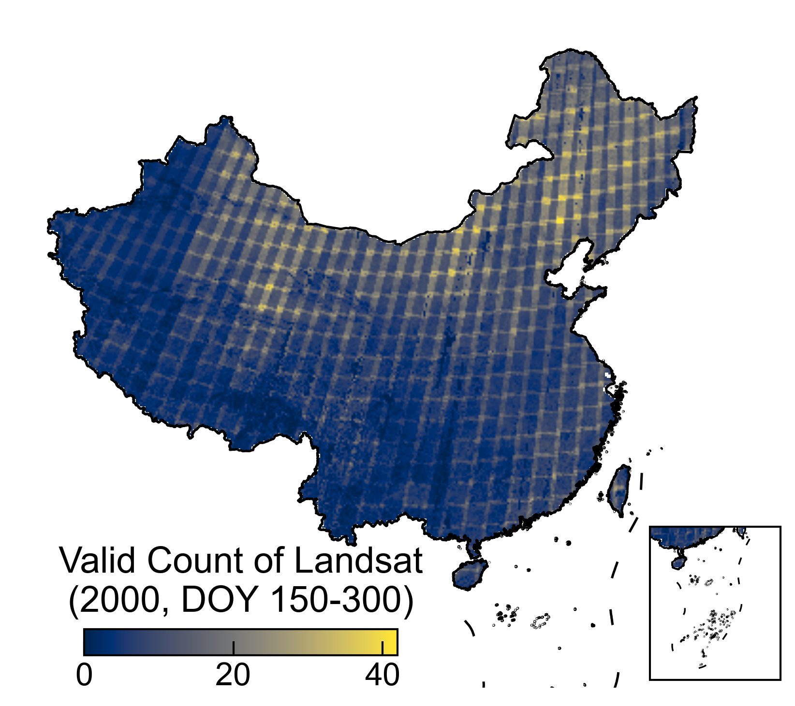
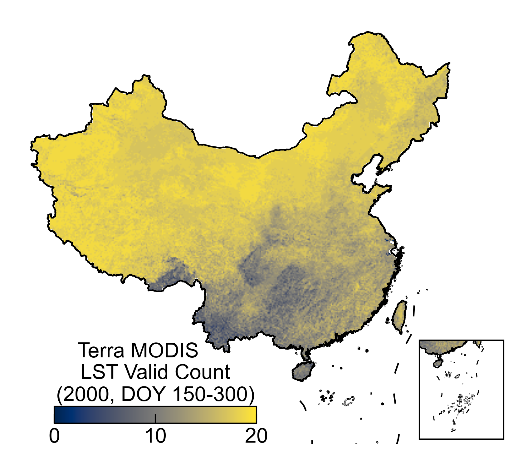
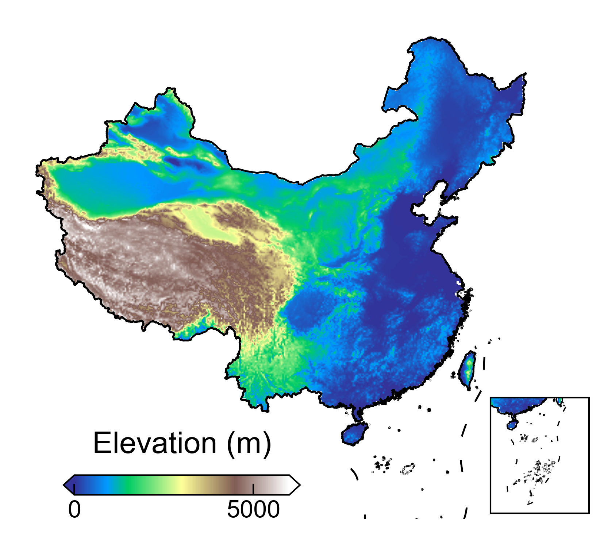
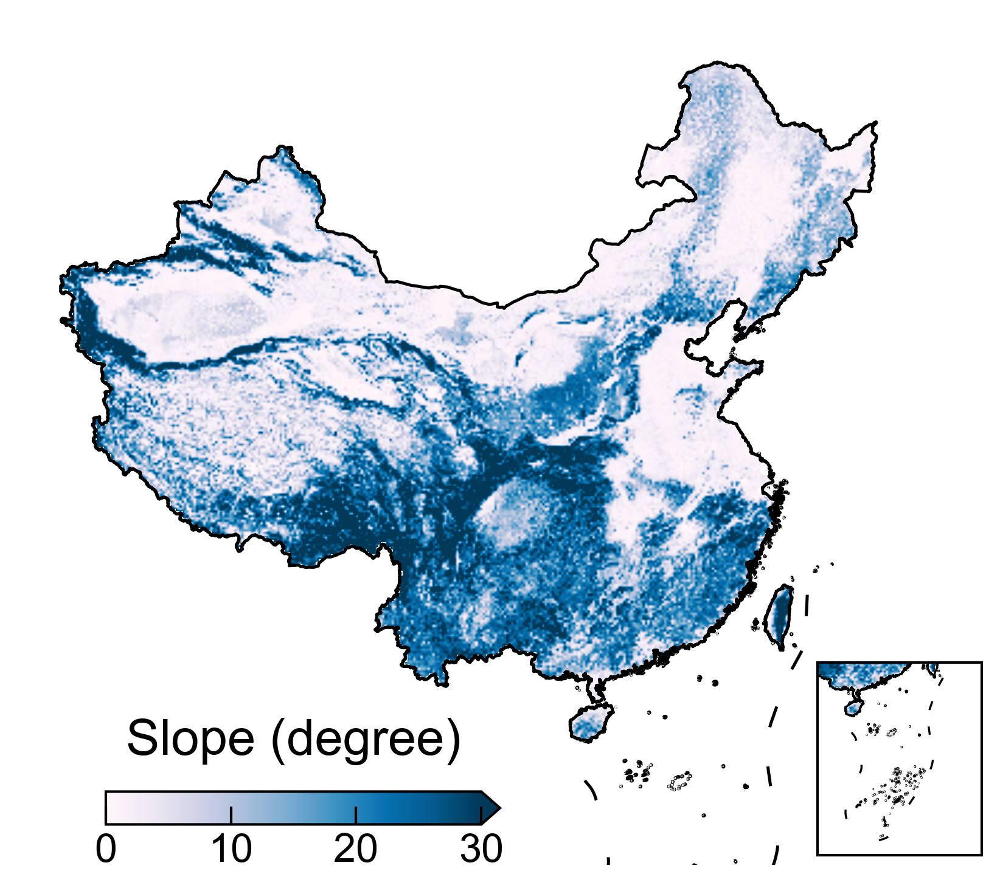
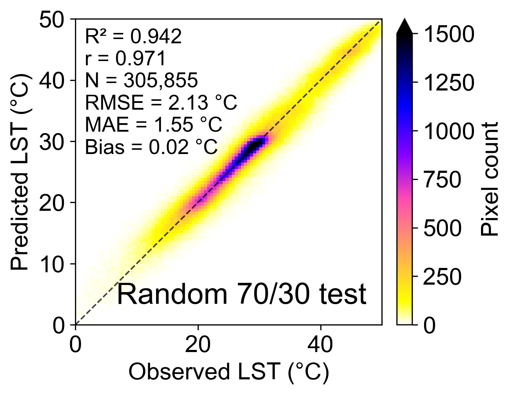
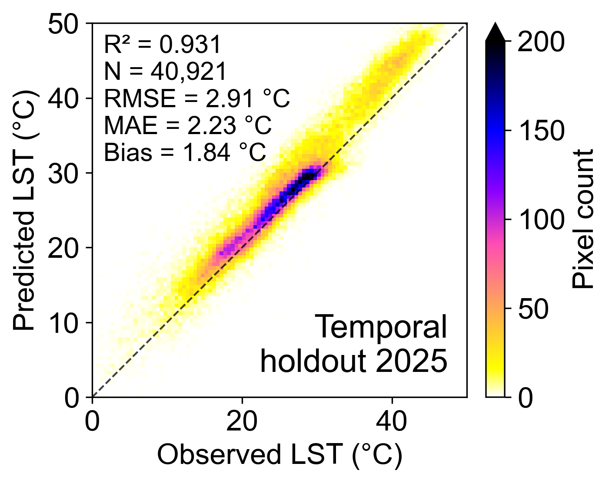
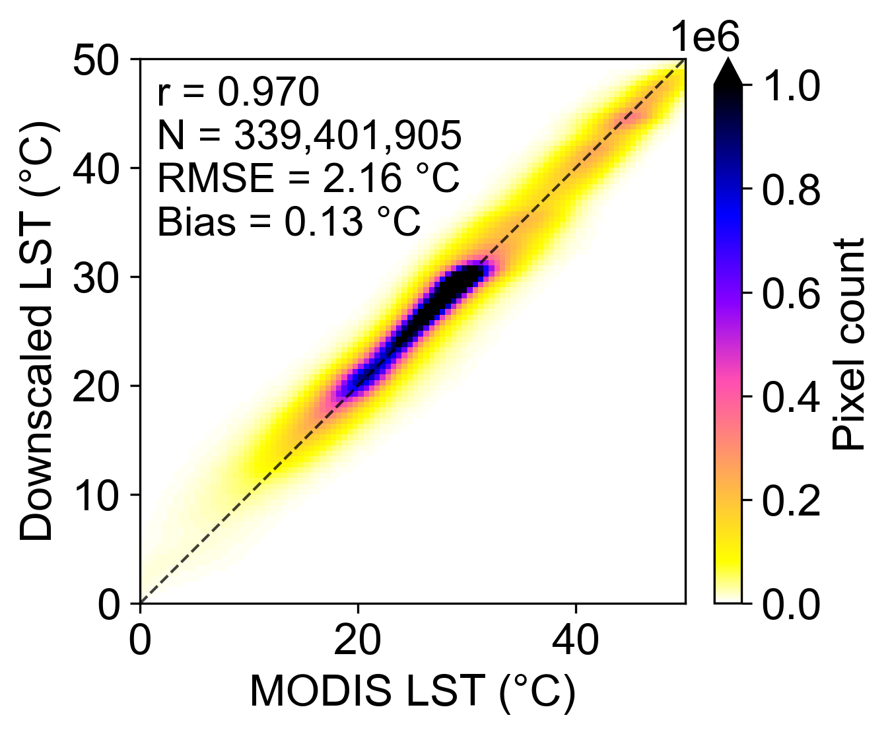

LST 构建面临的主要方法学挑战
| 卫星 | 热红外传感器 | 热红外波段 | 热红外原生分辨率 | 时间覆盖 |
|---|---|---|---|---|
| Landsat 5 | TM | Band 6 | 120 m | 16 天重访 |
| Landsat 7 | ETM+ | Band 6 | 60 m | 16 天重访 |
| Landsat 8/9 | TIRS / TIRS-2 | Band 10, 11 | 100 m | 16 天重访 |
| Terra MODIS | MODIS | MOD11A2 产品 | 1 km | 8-day composite |
30 米 LST
本页说明长期全国尺度 30 米 LST 构建所面临的主要方法学问题，并概述本研究基于 MODIS LST、多源环境变量和随机森林模型实现空间降尺度的总体思路。
| 卫星 | 热红外传感器 | 热红外波段 | 热红外原生分辨率 | 时间覆盖 |
|---|---|---|---|---|
| Landsat 5 | TM | Band 6 | 120 m | 16 天重访 |
| Landsat 7 | ETM+ | Band 6 | 60 m | 16 天重访 |
| Landsat 8/9 | TIRS / TIRS-2 | Band 10, 11 | 100 m | 16 天重访 |
| Terra MODIS | MODIS | MOD11A2 产品 | 1 km | 8-day composite |






